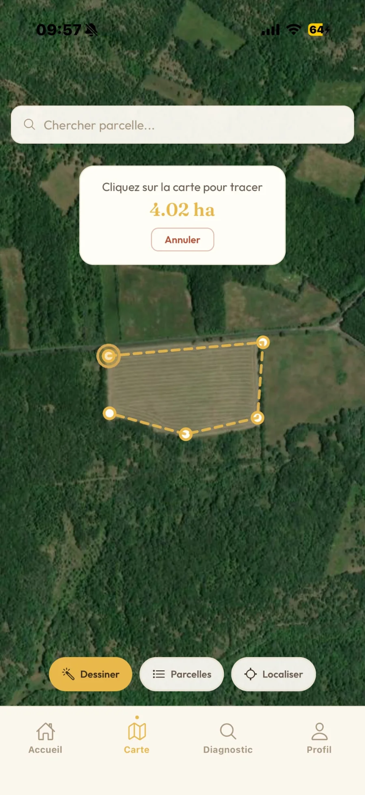
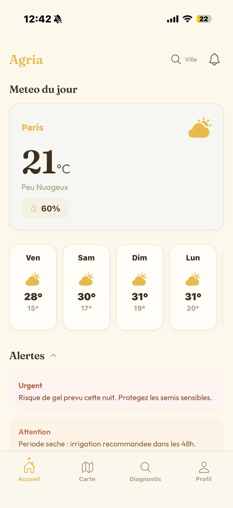
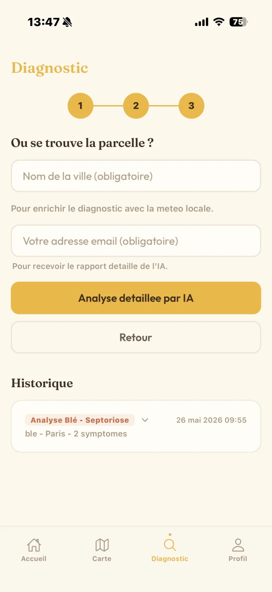
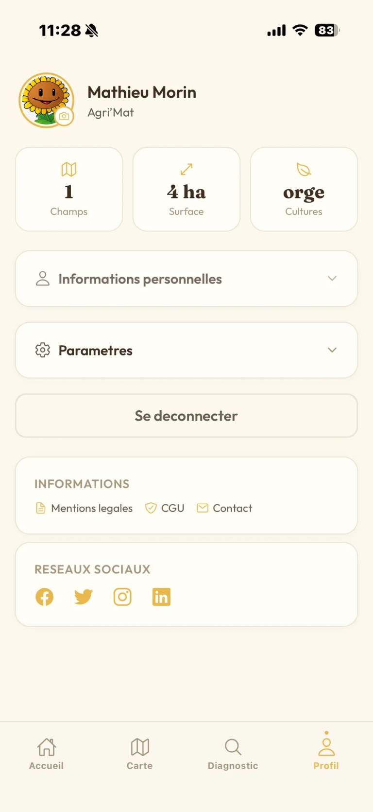

Agria
Agria est un prototype d'application mobile destiné aux agriculteurs en coopérative. Il réunit météo locale, suivi des parcelles et diagnostic des cultures pour aider à prendre des décisions directement sur le terrain.
Projet de Bachelor 1 réalisé par quatre étudiants en une semaine · Testé sur iOS et Android avec Expo Go
- TypeScript
- React Native
- Expo
- Firebase
- Leaflet · WebView
- Make.com
- OpenWeatherMap
- Open-Meteo
Présentation
Un compagnon numérique pour le suivi des cultures
Le projet part d'un constat : les agriculteurs ont besoin d'outils mobiles simples pour cartographier leurs parcelles, consulter une météo localisée et repérer les maladies. Agria rassemble ces usages dans une seule application, pensée pour rester utile même lorsque la connexion internet n'est pas permanente.
Météo et alertes
Le tableau de bord présente la météo du jour, les prévisions à cinq jours et des alertes de risque. Un score local analyse sept facteurs météo; Make.com peut ensuite enrichir l'alerte avec une recommandation générée par IA.
Carte des parcelles
Sur la carte satellite, l'utilisateur dessine ses parcelles et obtient automatiquement leur surface en hectares. Il peut aussi renseigner culture, sol, stade et date de semis; l'accrochage aux parcelles voisines aide à éviter les chevauchements.
Diagnostic guidé
Le parcours en trois étapes demande une culture, des symptômes puis une localisation. Un algorithme compare les réponses à une base de 15 maladies réparties sur cinq cultures et fournit une première explication et des recommandations.
Enrichissement par IA
Pour aller plus loin, le diagnostic local peut être transmis à un agent agronomique via Make.com. Le rapport détaillé revient dans l'application, est enregistré dans Firebase et reste consultable dans les notifications.
Compte et administration
Le profil rassemble les informations de l'exploitation et ses statistiques. Un back-office séparé permet aux administrateurs de gérer utilisateurs et parcelles, consulter les journaux et suivre l'activité.
Architecture et choix techniques
Une application mobile connectée, avec une base locale
L'application est développée en React Native avec Expo et TypeScript. Leaflet est affiché dans une WebView pour conserver les outils cartographiques du prototype web. Firebase Realtime Database synchronise les données et Firebase Authentication protège les comptes; AsyncStorage conserve une copie locale pour que l'application puisse continuer à fonctionner hors ligne avant synchronisation.
Mobile
Expo Router · React Native SDK 54 · TypeScript
Cartographie et météo
Leaflet · WebView · ArcGIS/Esri · Nominatim · Open-Meteo
Données et comptes
Firebase Realtime Database · Firebase Authentication · AsyncStorage
Automatisation
Webhooks Make.com pour les analyses IA et les alertes enrichies
Retour d'expérience
Les défis du projet
Le projet a été mené en équipe de quatre sur une semaine. Pour intégrer Leaflet, une bibliothèque conçue pour le web, dans l'application mobile, nous l'avons isolée dans une WebView et reliée à React Native par échange de messages. Le dessin tactile des parcelles a demandé plusieurs ajustements : fermeture automatique du polygone, zone de sélection élargie et aimantation aux parcelles voisines.
Le backend a également évolué pendant le projet : nous sommes passés de Supabase à Firebase pour simplifier l'initialisation sous React Native et bénéficier de la synchronisation en temps réel. Les données sont d'abord enregistrées localement, puis synchronisées dès que le service est disponible.
Agria reste un prototype fonctionnel, testé sur iOS et Android via Expo Go. Le diagnostic actuel s'appuie sur le rapprochement des symptômes; l'analyse directe d'une photo et l'extension du diagnostic à d'autres cultures font partie des pistes d'évolution.
Aperçu de l'application
Les écrans de l'application sur mobile
Les captures ci-dessous montrent les principaux parcours dans le design « Golden Hour », conçu pour rester lisible en extérieur.







